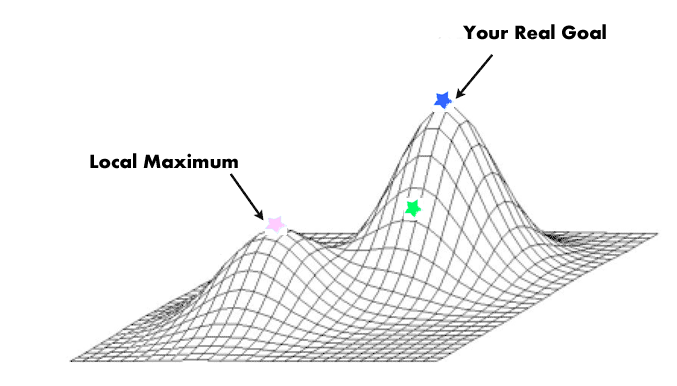
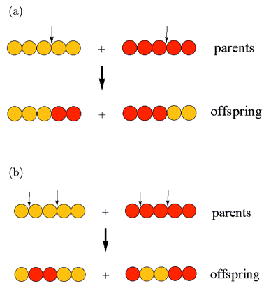
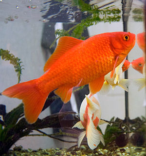
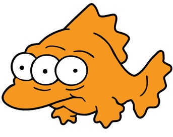
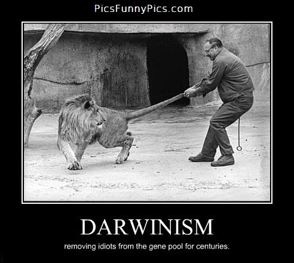

Genetic Algorithms
a.k.a. Playing God...ehrm...Darwin
Jan Monschke
made with reveal.js <3
What's it about?
A problem-solving technique that works like natural evolution. Literally!
Biologist B-Bingo:
- Population
- Genetic Drift
- Mutation
- Genome
- Survival of the fittest
How biologists see it
Srsly, it's not as complicated as it sounds
Example: Travelling Salesman Problem
It fits great for a GA-example because it's a NP-hard problem!
A salesman has to find the shortest way that connects a set of cities. The salesman is only allowed to visit each city once. It doesn't matter where the salesman starts. In the end, the salesman has to return to the starting point again.
In other words

Genetic Algorithm Skeleton
- Generate a random population of genomes
- Rank the genomes according to their fitness
- Select / Mate / Mutate population
repeatFrom(2) unless solution.isGood()
Let's dive into the code
1) Random Population
class Population
genomes: []
constructor: (@populationSize, @maxGenerationCount) ->
@genomes.push new Genome() for i in [0...@populationSize]
class Genome
values: []
constructor: (@values = @initial()) ->
initial: ->
# cities represented as numbers from 0-14
# [0,3,4] means the route 0 -> 3 -> 4 -> 0
return [RANDOMARRAY FROM [0-14]]
var Genome, Population;
Population = (function() {
Population.prototype.genomes = [];
})();
Genome = (function() {
Genome.prototype.values = [];
function Genome(values) {
this.values = values != null ? values : this.initial();
}
Genome.prototype.inital = function(){
return [RANDOMARRAY FROM [0-14]]
}
})();
Ranking
Which solutions are good?
- A Genome's fitness is needed to compare them
- Fitness as in: "How close to the goal am I?"
- In our case: Fitness = Sum of all paths
- Since in our case a lower fitness means, a solution is better, we'll call it cost
Calculating the cost and ranking
class Genome
cost: ->
cost = 0
for city, index in @values
# A,B,C: A->B
if index+1 < @values.length
cost += distances[city][@values[index+1]]
else
# A,B,C: C->A
cost += distances[city][@values[0]]
cost
class Population
rank: ->
@genomes = _.sortBy @genomes, (genome) -> genome.cost()
Genome.prototype.cost = function() {
var city, cost, index, _i, _len, _ref;
cost = 0;
_ref = this.values;
for (index = _i = 0, _len = _ref.length; _i < _len; index = ++_i) {
city = _ref[index];
if (index + 1 < this.values.length) {
cost += distances[city][this.values[index + 1]];
} else {
cost += distances[city][this.values[0]];
}
}
return cost;
};
Population.prototype.rank = function() {
return this.genomes = _.sortBy(this.genomes, function(genome) {
return genome.cost();
});
};
Wrap-up
What do we have now?
- Genomes with random arrays
- We can calculate a cost from that
- The Population is sorted
- The fun ist just about to come ;)
A tale about birds and bees
The Next Generation
- Select two Genomes
- We're scientists, so we skip all the family and relationship stuff
- Create two offsprings via crossover
- Mutate these two offsprings
- Add them to the next generation
Selection
The method of selectioning depends heavily on the problem. Find it out by trial & error.
- Simple Selection -> Select neighbor Genome
- Tournament Selection -> Select x random Genomes and pick the best of them
- Roulette Selection -> Chance of being picked depends on fitness (the fitter-> higher chance)
Why don't we just select the best solutions?
It is important to keep variety in the population or otherwise we may not find the optimal solution. (aka a local maximum)
Tournament selection
class Population
tournamentSelect: ->
participants = []
# select random participants
for index in [0..@tournamentParticipants]
randomIndex = Math.floor @genomes.length * Math.random()
participants.push @genomes[randomIndex]
# rank participants
participants = _.sortBy participants, (genome)->genome.cost()
participants[0]
Population.prototype.tournamentSelect = function() {
var index, participants, randomIndex, _i, _ref;
participants = [];
for (index = _i = 0, _ref = this.tournamentParticipants; 0 <= _ref ? _i <= _ref : _i >= _ref; index = 0 <= _ref ? ++_i : --_i) {
randomIndex = Math.floor(this.genomes.length * Math.random());
participants.push(this.genomes[randomIndex]);
}
participants = _.sortBy(participants, function(genome) {
return genome.cost();
});
return participants[0];
};
Crossover
Not so sexy at all
Crossover
- Not so easy for the TSP
- Genomes can easily become invalid by slicing
- Needs extra validation
- There are papers on it
Mutation
Needed to keep variety (we talked about it ;))

It turns this into...
Mutation
...this...
Mutation
...by doing this:
[1,3,2,0]
genome.mutate()[2,3,1,0]
Le mutation code
Class Genome
mutate: ->
indexA = @getRandomIndex @values
indexB = @getRandomIndex @values
buff = @values[indexA]
@values[indexA] = @values[indexB]
@values[indexB] = buff
Genome.prototype.mutate = function() {
var buff, indexA, indexB;
indexA = this.getRandomIndex(this.values);
indexB = this.getRandomIndex(this.values);
buff = this.values[indexA];
this.values[indexA] = this.values[indexB];
return this.values[indexB] = buff;
};
Elitism
The x best Genomes are directly transferred to the next generation.
Next Generation Code
for index in [0...@genomes.length-skip] by 2
# Perform a tournament selection
a = @tournamentSelect()
b = @tournamentSelect()
# perform a crossover
children = a.crossover b, @mixingRatio
a = children[0]
b = children[1]
# mutate the genomes
a.mutate() if Math.random() < @mutationChance
b.mutate() if Math.random() < @mutationChance
# add the new genomes to the next generation
nextGeneration.push a
nextGeneration.push b
Next Generation Code
for (index = _i = 0, _ref = this.genomes.length - skip; _i < _ref; index = _i += 2) {
a = this.tournamentSelect();
b = this.tournamentSelect();
children = a.crossover(b, this.mixingRatio);
a = children[0];
b = children[1];
if (Math.random() < this.mutationChance) {
a.mutate();
}
if (Math.random() < this.mutationChance) {
b.mutate();
}
nextGeneration.push(a);
nextGeneration.push(b);
}
When does it stop?
Again, this highly depends on the problem
- After a max number of generations
- When a certain goal has been reached
- When the best solution hasn't changed in x generations
Demo time
Click me for a demoWhat is it useful for?
- Finding the optimal mix of parameters for an algorithm
- Find the most efficient structure for a chair
- Timetabling / Scheduling
thanks
Questions?